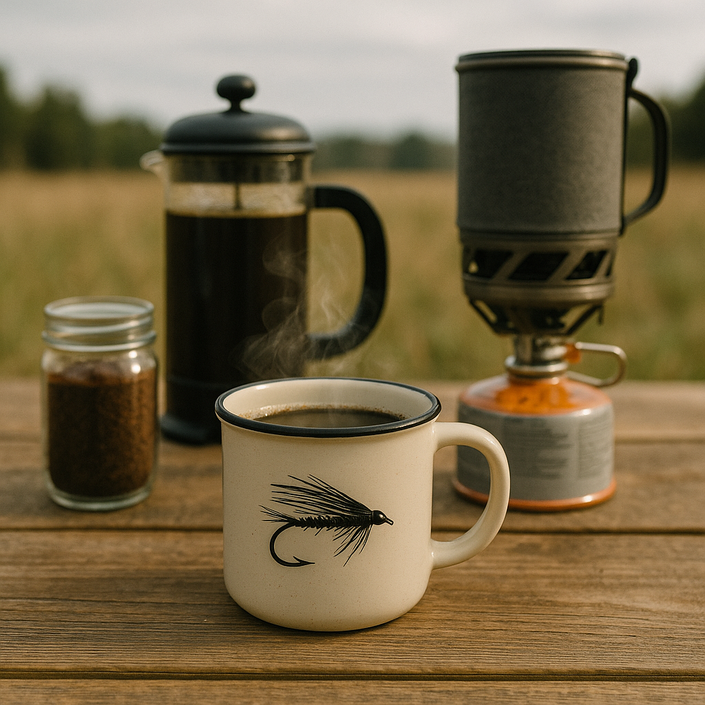

Field Coffee
Home

Field Coffee by BuiltWithRobK
Description
The field coffee is inspired by all my time in the woods. Nothing gets a day going
out in the woods quite like a solid cup of coffee. Whether it is the coffee itself
or the process of making it, it is a complete moral booster or just the perfect slow
start to the day.
Ingredients
- Water
- Ground coffee of choice
- Jetboil or equivalent
- Gas for Jetboil
- Field French Press
- Your favorite coffee mug
Put it all together
- Bring water to a light boil using Jetboil
- Pour water into french press
- Add coffee per your taste (two to three "scoups")
- Lightly agitate to get all grounds in the water
- Let it sit for 3-4 min and then stir one last time
- Press coffee, pour, and enjoy